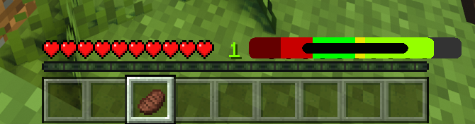

Better Hunger
A mod that gives you some more information about your player's hunger.
- Dark red is the level of hunger at which you can't sprint any more
- Red is regular hunger
- Green is the amount of hunger you'll have after you eat the thing you're holding.
- Yellow is the amount of saturation (kind of like a hidden hunger bar) you have.
- Lime is the amount of saturation you'll have after you eat what you're holding.
- In the middle of the bar, black means you can eat, red means you can't.
Apparently Minecraft changed how these values work, so the mod is broken currently.
